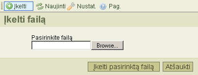

Įkėlimo* mygtukas, esantis įrankių juostoje, atidaro "Failų įkėlimą", kuris skirtas naujų failų įkėlimui į segtuvą. Žemiau pateiktas šio įrankio atvaizdas:

Kad uždarytumėte failų įkėlimą, spustelėkitee "Atšaukti" mygtuką, arba spauskite "Įkelti" iš naujo įrankių juostoje.
* "Įkelti/Upload" tai yra techninis terminas. Tai reiškia failo perdavimą iš savo kompiuterio į serverį.
Žemiau pateikti pranešimai gali atsirasti įkeliant failus:
Tai parodo jof failas su tokiu pačiu pavadinimu jau egzistuoja tame pačiame segtuve. Konfliktui išvengti, prie jo pavadinimo pridedamas "(1)".
Įkeliamas failas buvo nepriimtas.
Dažniausia šių pranešimų priežastis yra ta, kad CKFinder buvo sukonfigūruotas nepriimtų tokios rūšies failų, atsižvelgiant į plėtinius. Tai saugumo apribojimas. Kita priežastis gali būti ta, kad failo apimtis yra per didelė. Tokiu atveju, reikia pakeisti pačio serverio nustatymus, kurie leistų įkelti didesnės apimties failus.
Įkeliamame faile yra html duomenys. Saugumo sumetimais, įkelti galima tik tuos failus, kurių plėtiniai yra nurodyti konfigūracijoje ir kurie neturi html plėtinio.
Dėl detalesnių pakeitimų prašau susisiekite su savo sistemų administratoriais.